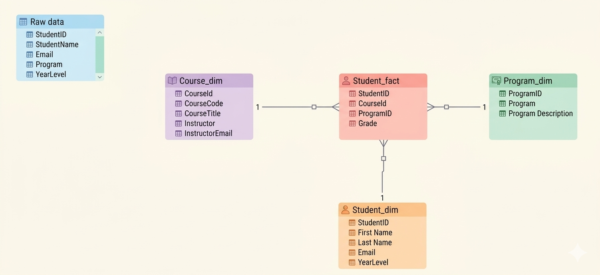
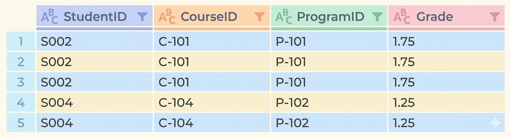

Objective In this laboratory exercise, you will normalize a flat student record dataset using Microsoft Excel Power Query. The goal is to transform unstructured data into properly organized tables that follow the Relational Data Model and reduce data redundancy.